Project Goals
Enhance patients’ digital experiences (UX) and better convey the expertise and leadership of WU Physicians
Align with the School of Medicine/WashU UX and brand guidelines while customizing the experience for patients
Refine the mix of engaging messaging and visual elements
Make everything as simple as possible for a wide spectrum of users, allowing people to find and access what they need to quickly
Surveying competitor sites
For this research phase of the project, we looked at the first 25 of the top medical schools in the U.S News and World Report 2020 edition. This is a well-recognized magazine that accurately gives rankings for medical schools across the country.
The Survey
For this survey, we looked at:
- Primary Navigation
- Secondary Navigation
- Header elements
- Calls to action
- Homepage content
- Menu styles
Primary Navigation
The primary navigation showed anywhere from three to nine links, with five navigational links being most common.
The breakdown was as follows:
- 3 Links - 3 sites
- 4 Links - 4 sites
- 5 Links - 9 sites
- 6 Links - 2 sites
- 7 Links - 3 sites
- 8 Links - 2 sites
- 9 Links - 1 site
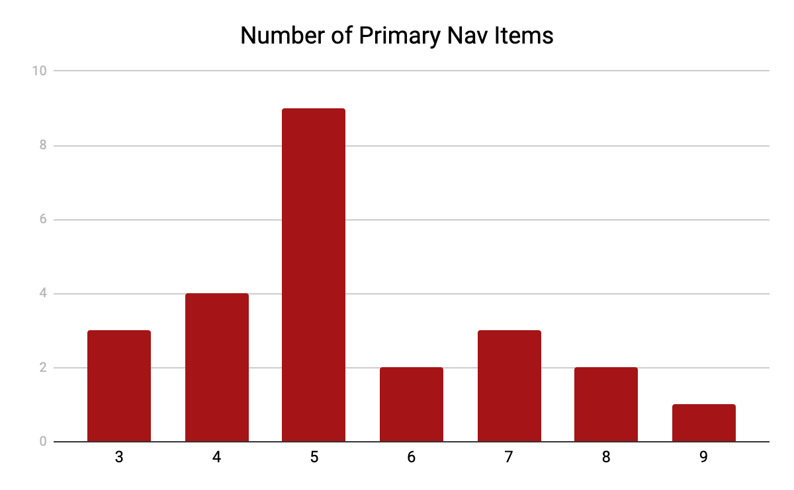
There were eight links that were most commonly used in the primary navigation. The most used were “Find a Doctor” and “For Patients & Visitors”.
The following were the eight items found the most frequently:
- Find a Doctor - 15
- Conditions & Treatments - 11
- For Patients & Visitors - 15
- Research - 10
- About - 11
- For Healthcare Professionals - 6
- Locations - 12
- Services - 9
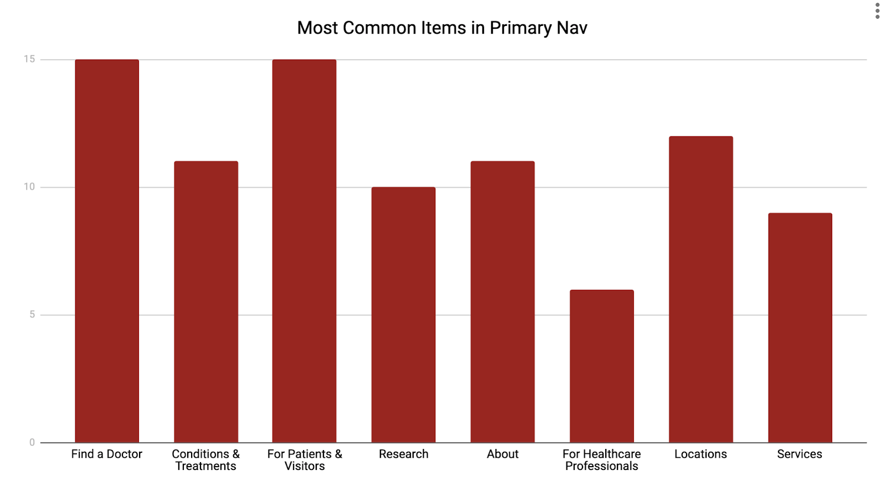
The first navigational element helps determine priority of pages. Most often the first navigational element was to “Find a Doctor”. Here is a breakdown of the first navigational elements.
- For Patients & Visitors - 4
- Find a Doctor - 10
- Conditions / Treatments - 4
- About - 3
- Services - 2
- Schedule an appointment - 1
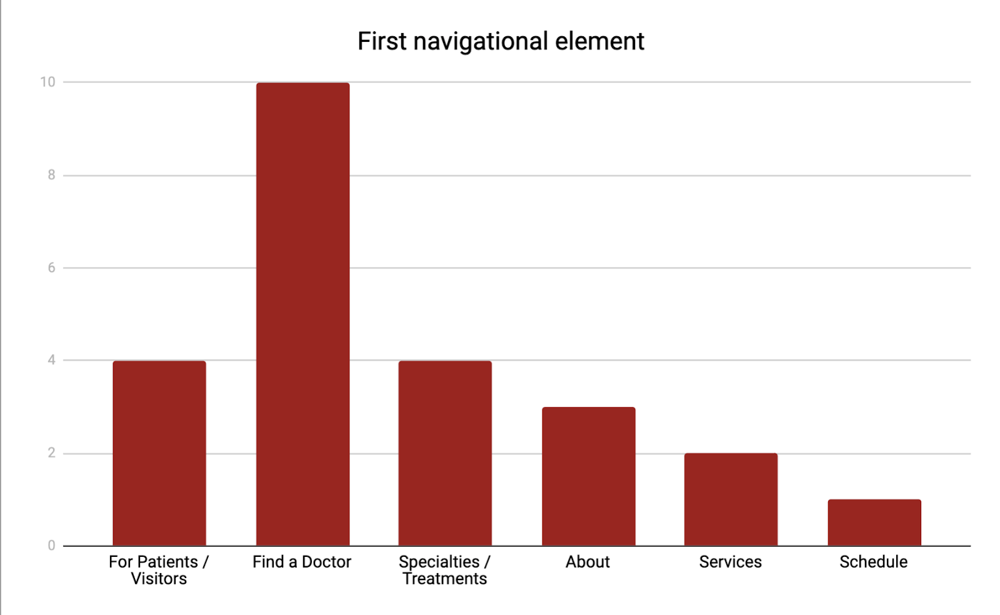
Secondary Navigation
A secondary navigation, or utility menu, is used throughout most of the sites. The most common amount of links for this menu is four.
- 0 links - 3 sites
- 1 links - 0
- 2 links - 0
- 3 links - 3 sites
- 4 links - 8 sites
- 5 links - 4 sites
- 6 links - 4 sites
- 7 links - 1 site
- 8 links - 0 sites
- 9 links - 1 site
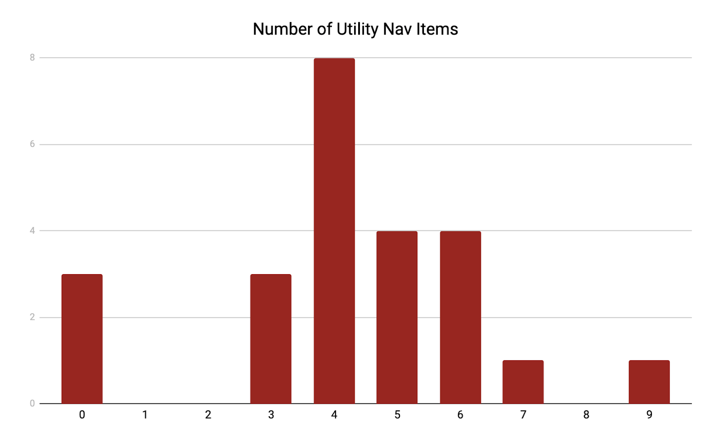
Within the secondary menu, a link to login to the “patient portal” was most commonly used. This included any link to MyChart or any other health platform for patients
-
About - 6
- Patient Portal - 12
- Bill Pay - 4
- School of Medicine - 6
- Contact - 9
- Find a Doctor - 6
- Give/Donate - 11
- Maps/Locations - 5
- Careers - 7
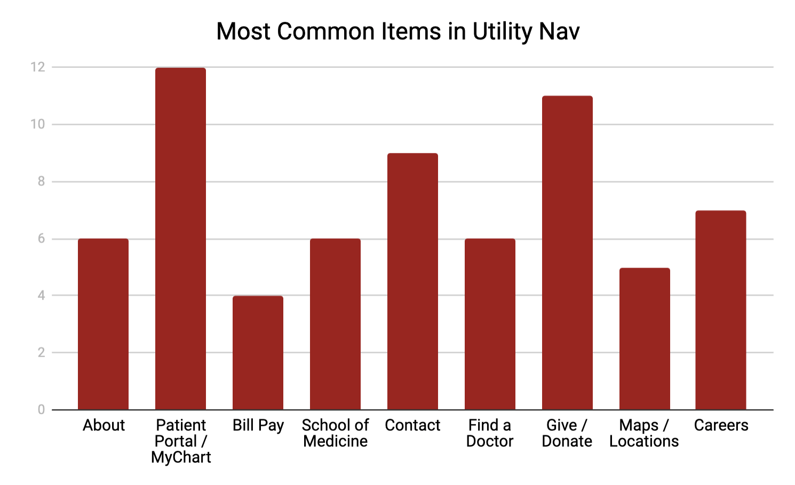
Menu Structure
Four different types of menus are used in the collection of sites. The most commonly used menus are a mega-menu and a standard menu.
-
Mega Menu - 33.3% of sites
- Standard Menu - 33.3% of sites
- Mobile Menu - 20.8% of sites
- Drop Down Menu - 12.5% of sites
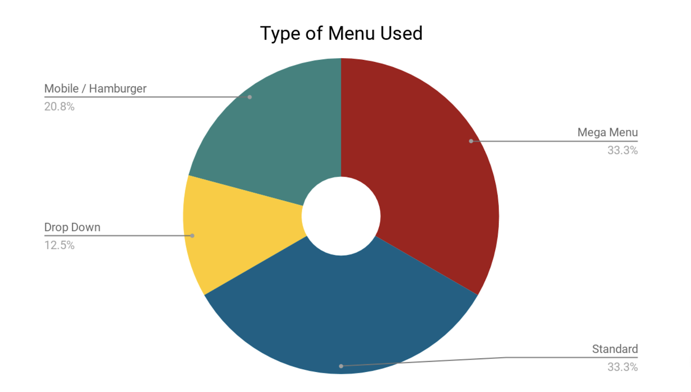
Call-to-Action Links
The call-to-action link on each page is usually found in the main image above the fold. This link, or links, are usually easily seen by the user because of it’s size, appearance, and relation to other elements on the page. The most common call-to-action links were as follows:
- Find a Doctor - 13
- Covid-19 Information - 6
- Locations - 5
- Pay Bill - 2
- Schedule Appointment - 6
- Video Visits / Telehealth - 4
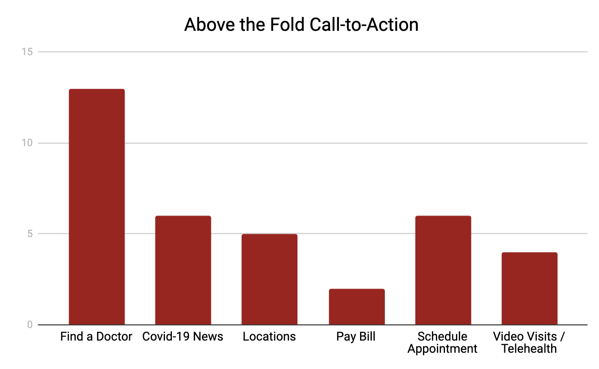
Header Features
Most headers included navigation, search, and a logo. Other than these, there were a few common items repeated on multiple sites.
- Phone Number - 6
- Emergency Banner - 18
- Mobile Menu on full-width - 6
- Tabbed Interface - 3
- I want to...Dropdown - 3
- Language Translate - 3
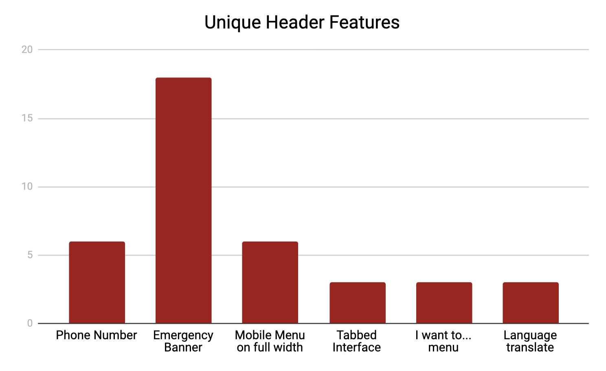
Homepage Content
Looking at the sections on each homepage helps determine website goals. The most common content feature was displaying News to the user. This was either Covid-related news, research news, or campus news. A breakdown of homepage content is as follows:
- Facts/Stats - 5
- News - 14
- Donate - 8
- Patient Portal/App - 12
- Telehealth - 5
- Social Media - 4
- Research - 4
- Appointments - 8
- Patient Stories - 6
- Find a Doctor - 12
- Billing/Insurance - 7
- Covid Information - 8
- Locations - 8
- Treatments/Conditions - 7
- Clinical Trials - 5
- Awards/Rankings - 8
- Phone Number - 7
- Visitor Information - 5
- Event/Classes - 5
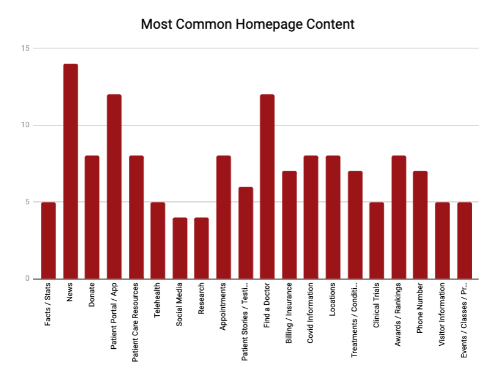
Insights
Throughout the research process, there were many insights gained that will help drive the design process.
Header insights
- Sites were heavily geared towards patients and anticipating their needs and wants
- The most common call-to-action was to find a doctor
- Specific language to take an action such as “Find a Doctor” or “Make an appointment” was commonly used for links instead of ambiguous link text like “Doctors” or “Appointments”
- Patient information and Visitor Information were grouped together often
- “Treatments” or “Conditions” (10 sites) was used a lot more often than “Specialties” (1 site) in the navigation
- A secondary navigation was used on 88% of sites
- Over half of the sites were using large-scale menus (mega menu or mobile menu)
- Links to “Giving” or “School of Medicine” were commonly found in the secondary navigation
- Most sites had a Covid-19 alert banner with information
Content insights
- Multiple call-to-actions grouped together for frequently sought-after links.
- Many sites highlighted their patient portal through the promotion of an app
- Video Visits are popular and frequently promoted
- An interactive location map was shown often
- Covid-19 information and news were found on almost all sites
- Facts / Figures and Awards were commonly on display
Design
Initial mockups were created based off the data given. Various iterations for menu structure, content, and information architecture were shown to directors for discussion.
Header Mockup
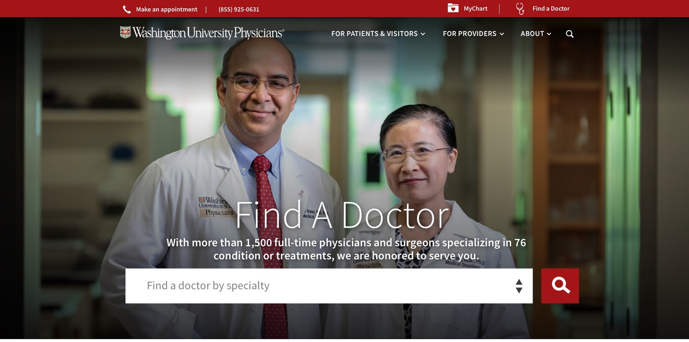
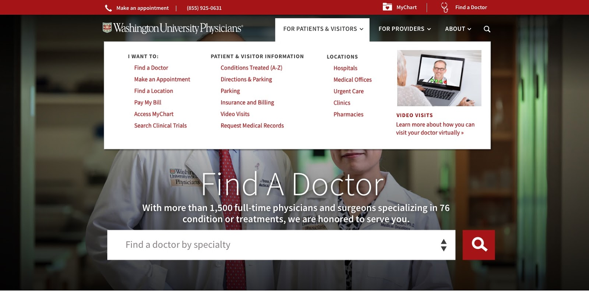
Homepage Mockup
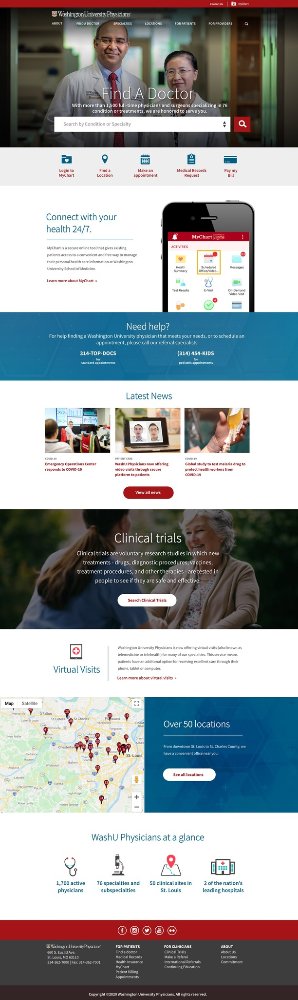
Next Steps
This was only the first phase in the redesign process. From here, we can move on to user research, user testing through prototypes, and continue to refine iterations based off of data.